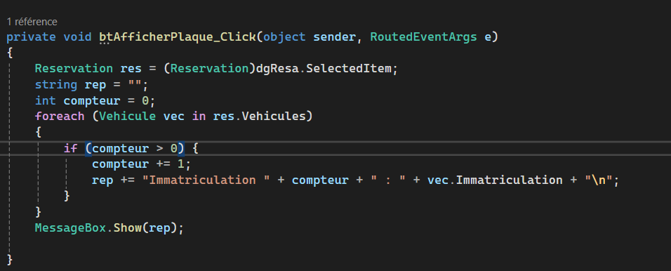
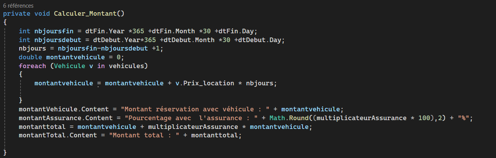

Durant ma 1ère année de BUT Informatique, j'ai eu l'opportunité de mettre en place mon apprentissage dans un groupe de 3 étudiants dans la conception et le développement d'une application de réservation de véhicule pour l'enseigne française de grande distribution : « Intermarché »
Pour analyser les besoins du client, nous avons découpé chaque fonctionnalité en étapes simples (récupération des données, filtrage, tri, affichage, interactions). Ce découpage nous a permis d’identifier les structures et les traitements nécessaires pour organiser correctement le développement.
Nous avons eu besoin de récupérer de nombreuses données depuis la base de données, mais toutes n'étaient pas nécessaires, il nous fallait un moyen de filtrer toutes ces données pour obtenir celles souhaitées. Pour cela, nous avons étudié les meilleurs alghorithmes de filtrage, et nous avons choisi Foreach pour avoir accès à toutes les données et les tester l'une après l'autre efficacement.

Nous avons mis en œuvre des outils mathématiques pour calculer automatiquement le montant du véhicule pour une réservation avec le prix de l'assurance (montant du véhicule, durée, ...) permettant au client d’avoir un aperçu rapide du montant total de la réservation.
